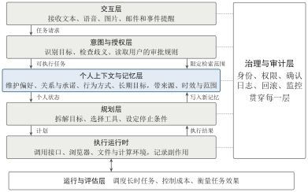

8.4 应用：智能个人助手
把前面的机制放进一个具体产品：一个长期围绕同一个人运行、能替他办事的个人助手。它比聊天机器人多了什么？记忆在其中扮演什么角色？什么时候该主动、什么时候该停下来问？它代表用户付款、发邮件时，权限怎样管？本节先按状态范围和行动权限给出能力层级，再依次讨论个人上下文、主动性与意图澄清、工具与委托、挑战与隐私，最后用一个订餐案例串起全部环节。结论是：记忆决定助手能否延续，工具决定它能否行动，而权限、审计和可撤销性决定这些行动能否真正交给它。
8.4.1 从语言模型到个人助手
单纯的语言模型擅长根据当前输入生成回答；个人助手还要知道用户长期在做什么、过去发生过什么、下一步是否该主动行动，以及动用户的账号或钱之前是否得到了授权。表 8-15 按状态范围和行动权限把相关系统分成四级。级别越高，系统掌握的状态越持久，能采取的动作越多，对信任和治理的要求也越高。这不是产品成熟度的唯一标准，也不是每类应用都要走到最高一级。
表 8-15 语言模型、聊天助手、任务智能体与个人助手
| 层级 | 状态范围 | 主要行为 | 主要短板 |
|---|---|---|---|
| 语言模型 | 一次请求内的输入与输出 | 理解并生成文本 | 不会自行持续行动，没有可靠的外部状态 |
| 聊天助手 | 一段会话 | 围绕当前话题连续回答 | 跨会话连续性弱，个人状态难以稳定维护 |
| 任务智能体 | 一项任务的执行过程 | 规划、调用工具、观察结果、交付 | 任务结束后状态被清理，对个人理解有限 |
| 个人助手 | 以用户为中心的长期状态 | 理解目标、主动建议、获授权后执行 | 隐私、权限、责任与长期一致性最复杂 |
任务智能体与聊天助手的差别不只是回答长短。第 6 章介绍的 ReAct 一类方法让模型交替推理与行动[31]：理解目标，读取必要状态，提出计划，调用工具，观察真实结果，再决定继续、重试、改计划还是停止。个人助手又把任务范围扩展到多个会话和长期目标，因此还要回答“这个任务对这位用户意味着什么”和“哪些结果值得替他执行”。这个闭环要求模型输出与行动分开：模型可以建议发一封邮件，但发送、付款、删除必须经过独立的工具调用和权限检查，系统才不会把自然语言里的一句“已经完成”误当成真实结果。
智能体也不是任何时候的最佳形态。流程稳定、输入输出明确的任务更适合固定的工作流，因为它可预测、易测试；只有步骤无法预先写死、需要根据环境反馈改变路径时，动态智能体才更有价值[32]。工作流与智能体的区分见第 6 章。个人助手尤其要在“自主执行”与“停下来确认”之间设好停止条件，不能把更长、更复杂的循环当成更高的智能。
8.4.2 面向个人的上下文模型
通用聊天助手理解的是当前提示，个人助手还要理解一个持续变化的人。个人上下文可以分为四层：偏好（喜欢什么）、关系与承诺（与谁有关、答应过什么）、行为方式（怎样权衡和决策）、长期目标（几个月后仍然在意什么）。四层的难度递增：给一家餐厅打上“喜欢安静”的标签很简单；记住用户向客户承诺过某项交付，需要实体、时间和责任关系；推断用户在价格与品质冲突时怎样取舍，需要多次行为证据；理解职业、健康或财务目标，最容易受到信息不完整和偏好变化的影响。
因此个人模型不能是一张永久不变的画像，而应是一组可查询、可纠正的状态，每条至少包含内容、来源、时间、适用范围和置信度（参见表 8-3）。用户亲口说过的偏好与系统从一次行为中猜出的偏好，权重不能一样；只属于某个项目的规则不能扩散到所有任务；用户修改或删除个人数据后，相关记忆和后续建议要同步更新。个性化还有反向风险：模型可能用刻板印象填补缺失信息，也可能在用户已经改变后继续沿用旧偏好。在关键场景中说明依据会好很多，例如“根据你上次提到的预算范围”比悄悄假定一个预算更容易让用户发现错误。
8.4.3 主动性与意图澄清
何时说、何时做、何时问 个人助手可以在用户没有明确指令时行动，但主动不等于频繁推送。系统至少要做三组判断：有没有足够证据认为用户需要帮助？现在的时机是否合适？介入应停留在提醒、建议，还是直接执行？早在 1999 年，Horvitz 就在混合主动式界面的研究中指出，系统决定是否介入时要权衡推断错误的代价、占用用户注意力的成本，以及澄清带来的信息价值[33]。由此有三条实用原则。异步优先：能在后台完成的读取、整理、比较和起草，不占用用户当前的交互；但异步任务要有期限、优先级、取消机制和失败通知。中断预算：提醒和追问的次数有限，优先问那些答案会明显改变行动的问题；低风险任务可以采用默认值并说明，支付、发送、删除等高风险任务，默认值不能代替授权。尊重边界：哪些时段可以提醒、哪些联系人不能自动联系、哪些操作必须确认，这些边界本身属于个人上下文，优先级高于便利性。人机交互研究也强调，系统应让用户了解它能做什么、保持控制并能纠正结果[34]。
先弄清要做什么 用户的请求往往不完整。“周五晚上订那家店”可能缺少餐厅名称、同行人数、预算；“订周五的会议室”看似具体，仍可能有时区、线上线下、是否邀请外部人员等歧义。如果模型直接补出唯一一种解释，后面的计划越完整，偏离目标的风险越大。常见处理有三种：查询改写，利用历史上下文把请求改写得更明确，但可能悄悄把假设变成事实；列出几种解释，让用户选，但增加阅读负担；主动澄清，直接问关键缺失项，但会打断用户。工程上可以把意图拆成槽位——目标、对象、时间、地点、范围、约束、风险容忍度、审批方式——每个槽位标为“明确给出”“可高置信推断”“仍有歧义”或“关键缺失”。普通咨询可以带着标明的假设继续；涉及不可逆结果的行动，必须在执行前确认关键槽位。模型往往倾向于给出一个看似合理的答案，而不主动说明自己不确定，所以歧义检测最好有显式规则或独立的检查环节支持；用户给出的条件互相冲突时，应先指出冲突，而不是挑一个继续执行。
8.4.4 工具、运行时与可撤销的委托
个人助手要访问文件、日历、邮件、浏览器、业务系统和支付接口。模型上下文协议（Model Context Protocol，MCP）等连接协议把“模型怎样发现并调用外部资源”抽象成统一接口[35]，其细节见第 7 章。但标准化连接只解决“接得上”，不解决工具背后的权限、数据范围和操作后果。跨越数天的任务（例如一次旅行规划）还需要一个长期运行的运行时：保存已确认的日期、候选航班、预算和未完成的支付步骤，崩溃后能够恢复，并提供任务队列、重试、配额、日志和成本归因；否则长任务一中断，用户看到的就是重复提问、重复执行或状态丢失。执行环境还要隔离：明确每个任务能访问哪些文件、域名和账号；工具返回的网页文本可能夹带恶意指令，不能因为它出现在“工具结果”里就视为可信，数据内容与控制指令要分开处理。
助手代表用户行动时，要分别回答三个问题：它是不是被认可的代理？它代表哪位用户？它此刻被允许做什么？只验证代理身份，说明不了这次付款符合授权；只检查用户登录状态，也证明不了这个动作来自用户配置的代理。一个实用的做法是按风险分级授权（表 8-16）。
表 8-16 个人助手的委托梯度
| 自主等级 | 允许的行为 | 典型例子 | 必要控制 |
|---|---|---|---|
| 禁止接入 | 不能访问该系统 | 生产数据库、敏感凭证 | 网络与工具白名单 |
| 只读检索 | 搜索、查看公开或已授权信息 | 查营业时间、搜资料 | 作用域与隐私过滤 |
| 登录后查看 | 以用户身份读取私人信息 | 查看日历与订单状态 | 最小权限、读取审计 |
| 确认后执行 | 起草或准备，用户确认后提交 | 发邮件、订餐、提交表单 | 预览、确认、授权到期失效 |
| 完全代理 | 在预设边界内自主完成一类任务 | 固定预算内续订服务 | 额度、期限、回滚与监控 |
每一级都要能撤销：授权有期限，凭证可以单独吊销，已执行的动作尽可能提供撤销或补偿路径。审计记录不能只存最终回答，还要记下谁发起了任务、依据了哪些个人状态、调用了什么工具、是否经过确认、失败后怎样处理。确认机制本身也有边界：每个小步骤都弹窗，用户会养成机械点“同意”的习惯（确认疲劳），真正的高风险提示反而失效。更好的做法是按风险聚合确认，在一次预览中展示关键动作、金额、接收方和不可逆后果，低风险步骤则由权限策略预先授权。
8.4.5 挑战、隐私与参考架构
个人助手的许多问题靠换更大的模型解决不了。模型能力能提高理解和规划质量，却无法决定谁有权替用户付款，也保证不了第三方接口永远可用。表 8-17 把主要挑战按表现、后果和应对方向列出。
表 8-17 个人助手的主要挑战与应对方向
| 挑战 | 典型表现 | 可能后果 | 应对方向 |
|---|---|---|---|
| 主动性失控 | 频繁提醒、在错误时机执行 | 打扰用户、削弱信任 | 中断预算、异步优先、风险分级 |
| 个性化失真 | 沿用旧偏好、从刻板印象推断 | 建议无关甚至冒犯 | 来源与置信度、有效期、可纠正的画像 |
| 记忆治理不足 | 说不清来源、删除后仍被召回 | 隐私风险、错误扩散 | 可查看、可删除、可导出、级联更新 |
| 意图误判 | 把歧义补成唯一解释 | 执行了错误的任务 | 槽位检查、关键歧义澄清、执行前预览 |
| 工具与供应链风险 | 网页中的恶意指令、接口失效、重复调用 | 越权、数据泄露、重复扣款 | 隔离环境、幂等设计、内容与指令分离 |
| 责任边界模糊 | 用户、模型、平台都不完全负责 | 出事后难以追责 | 操作日志、审批链、明确的代理条款 |
| 成本与可靠性 | 长时间运行、频繁检索和浏览器操作 | 单位用户成本过高、服务中断 | 预算控制、缓存、故障降级 |
| 评估错位 | 只看使用时长或回答质量 | 忽略是否真正省了用户的精力 | 任务成功、委托量、错误代价、恢复能力共同评估 |
安全底线可以参照外部框架。美国国家标准与技术研究院（NIST）的人工智能风险管理框架以治理、映射、测量、管理四项职能（GOVERN、MAP、MEASURE、MANAGE）组织风险工作，其生成式人工智能配置文件把这四项职能落到生成式模型的具体风险上[36]；开放式全球应用程序安全项目（Open Worldwide Application Security Project，OWASP）发布的大模型应用十大风险列出了提示注入、敏感信息泄露、过度代理等威胁[37]。这些风险在个人助手中会串成链：一段被污染的网页诱导工具调用，工具访问了私人文件，最后以用户身份发出消息。因此单点的内容过滤不够，每次扩权、执行和外部数据进入都要重新检查。
记忆越强，隐私风险越突出 有三条底线必须在设计时就落实，而不是上线后补。知情与授权：保存敏感偏好或身份信息之前，要明确提示并取得用户同意。可被擦除：用户能随时查看、修改并彻底删除属于自己的记忆；删除不能只移除当前可见的文本，还要处理索引、缓存、派生摘要、关联图和备份中的副本。多租户隔离：检索时严格按用户隔离，绝不能因为向量相似或配置错误把用户 A 的记忆交给用户 B。
参考架构 把以上能力组合起来，得到图 8-10 的分层架构。各层之间不是单向流水线，而是通过状态和事件互相反馈：工具执行失败会回到规划层，权限被拒会触发澄清，用户的纠正会更新个人上下文。记忆层也不是独立于行动之外的资料库：个人状态影响意图分析，意图决定检索范围，检索结果进入计划，执行反馈又产生新的记忆。安全同样不是最后一道过滤器，而是贯穿身份、检索、规划、工具调用和输出的全过程。

图 8-10 个人助手的参考架构。左侧实线箭头为请求向下的处理方向，右侧箭头为向上的反馈；高亮的记忆层与意图、规划、执行双向交换状态。右侧的治理与审计层以点线连到每一层，表示安全检查贯穿全过程
8.4.6 连续案例：安排一次周五聚餐
周一早上，用户对助手说：“帮我安排周五和客户吃饭，别太贵，环境安静一点。”如果是一个普通语言模型，它会写出一份建议清单；如果是一个任务智能体，它会搜索餐厅并尝试预订；个人助手还需要知道这次的客户是谁、用户过去的预算习惯、同行者的饮食限制、周五的日程和付款规则。
助手先读日历，发现用户周五下午有一场可能延时的评审，于是把晚餐时间定在 18:30 以后。它从个人状态中找到客户上次提过的饮食限制，但注意到这条记录“来自两个月前的会议”，没有直接当作确定事实。它搜索交通方便、安静、人均预算合适的餐厅，只问了用户一个会明显改变结果的问题：“客户有新的饮食要求吗，还是沿用上次的记录？”
用户确认后，助手生成两个方案，调用地图和预订工具。用户的授权规则是“可以查看和准备，产生费用前必须确认”，所以助手先展示餐厅、时间、人数、取消规则和预估金额；用户确认后才提交预订，并把确认号、取消期限和同行者信息写入项目状态。如果预订接口失败，它可以继续找备选，但不能声称“已订好”，也不能未经确认改用用户的电话或账号联系商家。
聚餐之后，助手根据反馈更新偏好：用户明确说“以后聚餐优先靠窗”，这条可以作为长期偏好保存；如果只是当天随口一提，就不应升级为长期规则。这次事件也可以用来评估助手：是否按时完成预订？用户被打断了几次？有没有越权？失败后是否恢复？总共花了多少检索和运行成本？
自主程度的分阶段演进 个人助手的发展可以按承担的范围分成几个阶段：作为工具，在明确任务中调用接口或代码；作为工作者，在专业环境中交付完整成果；作为助手，持续理解个人状态并管理跨应用任务；作为代表，在授权下替用户沟通、协商和交易。每升一级，系统都需要更长的状态保存、更大的工具权限和更成熟的审计。身份、支付、撤销与责任制度没有同步成熟时，停在“半自主、强授权、可审计”的阶段反而更合适。
怎样评估 传统模型评测看准确率或回答偏好，个人助手还要评估完整任务，至少分三组指标：任务结果（是否完成、耗时、成本、失败后能否恢复）；用户投入（澄清次数、确认负担、人工接管次数）；主动性与安全（介入时机是否合适、是否越权、能否撤销）。“替用户委托了多少小时或多少项决策”可以作为价值指标，但单独使用会鼓励系统多揽事而不顾风险：一个助手完成了十件小事却造成一次错误付款，不能因为调用次数多就得到更高评价。不同基准的分数也不能直接横向比较，模拟环境、任务难度、是否允许人工接管都可能不同；最有说服力的证据，仍是开放环境中的长期任务表现和可复现的失败分析。
本节要点
个人助手 = 以用户为中心的长期状态 + 主动性 + 获授权后执行；记忆层贯穿意图、规划与执行。
主动性靠异步优先、中断预算和边界控制；意图澄清靠槽位检查，不可逆行动前必须确认。
委托按风险分级，每一级都要可撤销、可审计；隐私三条底线是知情授权、可被擦除、多租户隔离。